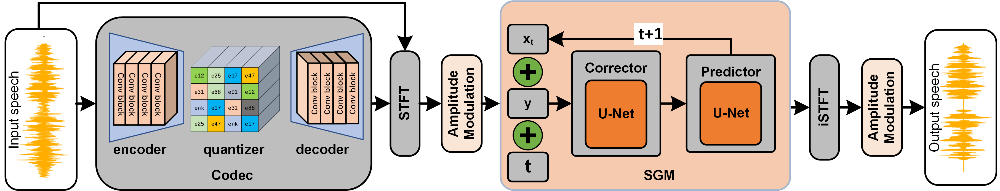
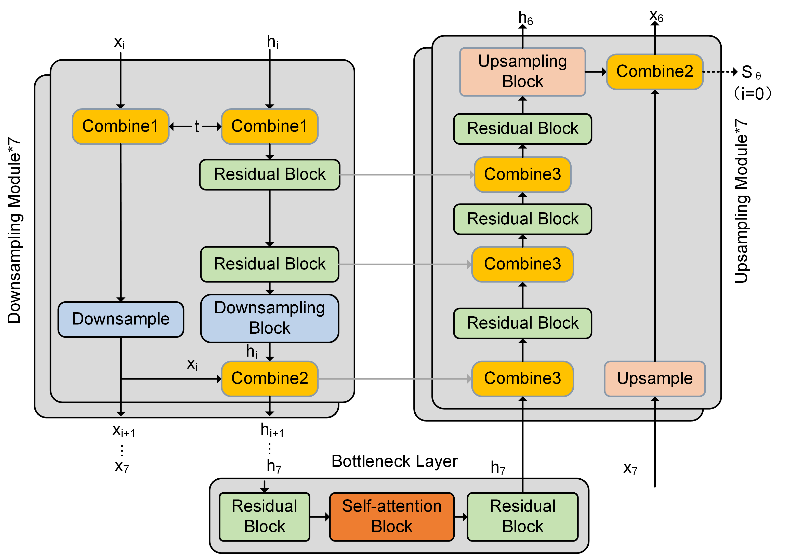

Diffcodec: Generative Codec Based on Diffusion Model for Speech Coding
Huaifeng Zhang 1, Tingting Lv 1, Hao Zhang1*,
1College of Electronic Engineerin, Ocean University of China, QingDao, 266100, China
Abstract.
Although GAN-based speech codecs achieve appreciable intelligibility and perceptual quality, the reconstruction of generated speech from discrete vectors in quantizers introduces phase mismatches imperceptible to human ears.
These mismatches manifest as subtle waveform misalignments and hinder improvements in objective metrics, primarily due to the discrete nature of vector quantization.
Inspired by the superior performance of diffusion models in speech enhancement, we innovatively reconstruct GAN-based codecs into a diffusion-based generative codec, termed Diffcodec.
This model employs the U-Net network, commonly used in diffusion models, to predict the data probability distribution from decoded speech to original speech, mapping the training approximation process to the reverse denoising process in diffusion models.
By introducing a loss function guided by data distribution gradients and eliminating traditional GAN loss functions, we transform adversarial training task into a pure generative task.
Comparative experiments demonstrate that Diffcodec outperforms GAN-based counterparts in speech output quality, achieving a PESQ score of 3.57 and an SI-SDR of 7.0 dB.
Further comparisons with traditional codecs (Lyra) and mainstream neural network codecs (SoundStream) confirm that Diffcodec maintains absolute advantages across low-bitrate scenarios.
Keywords: speech codec; generative adversarial network; score-based generative model; diffusion model
This page is for research demonstration purposes only.
Diffcodec Model Architecture

Structural topology of the Diffcodec model.
The Structure of The U-NET Network

Structural topology of the U-Net network.
Metrics of Codec Ablation Experiment
| Models | Type | Operation | Train step(k) | PESQ↑ | ESTOI↑ | SI-SDR↑ | DNSMOS↑ |
|---|---|---|---|---|---|---|---|
| Codec-v0 | baseline | +(Mel-loss) | 500 | 2.60 | 0.79 | -22.01 | 3.08 |
| Codec-v1 | Multi-loss | +(Spectral\&Waveform loss) | 500 | 2.56 | 0.81 | -17.37 | 3.13 |
| Codec-v2 | GAN-based | +(MSD&MPD) | 500 | 3.30 | 0.74 | -15.47 | 3.33 |
| Codec-v3 | GAN-based | +(SpecD&WaveD) | 500 | 3.26 | 0.75 | -16.70 | 3.37 |
| Diffcodec(ours) | Diffusion-based | +(U-Net) | 200 | 3.57 | 0.92 | 7.0 | 3.48 |
Output Speech of Codec Ablation Experiment
Select 10 groups of speech samples from each of p232 and p257.| Name | Clean | Codec-v0 | Codec-v1 | Codec-v2 | Codec-v3 | Diffcodec |
|---|---|---|---|---|---|---|
| p232_001 | ||||||
| p232_002 | ||||||
| p232_003 | ||||||
| p232_005 | ||||||
| p232_006 | ||||||
| p232_007 | ||||||
| p232_009 | ||||||
| p232_010 |
Output Speech of Multiple Codecs at 3kbps
Select 8 groups of speech samples from p232.| Name | Clean | Audiodec | SoundStream | Lyra | Diffcodec |
|---|---|---|---|---|---|
| p232_001 | |||||
| p232_002 | |||||
| p232_003 | |||||
| p232_005 | |||||
| p232_006 | |||||
| p232_007 | |||||
| p232_009 | |||||
| p232_010 |
Output Speech of Multiple Codecs at 6kbps
Select 8 groups of speech samples from p232.| Name | Clean | Audiodec | SoundStream | Lyra | Diffcodec |
|---|---|---|---|---|---|
| p232_001 | |||||
| p232_002 | |||||
| p232_003 | |||||
| p232_005 | |||||
| p232_006 | |||||
| p232_007 | |||||
| p232_009 | |||||
| p232_010 |
Output Speech of Multiple Codecs at 9kbps
Select 8 groups of speech samples from p232.| Name | Clean | Audiodec | SoundStream | Lyra | Diffcodec |
|---|---|---|---|---|---|
| p232_001 | |||||
| p232_002 | |||||
| p232_003 | |||||
| p232_005 | |||||
| p232_006 | |||||
| p232_007 | |||||
| p232_009 | |||||
| p232_010 |
Output Speech of Multiple Codecs at 16kbps
Select 8 groups of speech samples from p232.| Name | Clean | Audiodec | SoundStream | Diffcodec |
|---|---|---|---|---|
| p232_001 | ||||
| p232_002 | ||||
| p232_003 | ||||
| p232_005 | ||||
| p232_006 | ||||
| p232_007 | ||||
| p232_009 | ||||
| p232_010 |